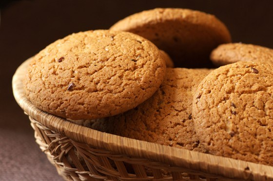

Начало
Перед чаем, нам надо что нибудь достать вкусного.
Ведь тогда зачем пить чай без вкусностей?
С чем можно попить чай'ок?
Конфеты
Чаще всего чай пьют с разными конфетками.
Я для вас создала топ вкусных конфет для чая!
Впервую очередь я бы посоветовала конфеты Рот Фронт. Они конечно простые, но очень вкусные!
Во вторую Toffifee, они так же очень вкусные.
А ну еще конечно же конфеты 'Аленка'.
Хоть ем я их не часто, но они все равно вкусные.

Овсяное печенье
Да-да! Овсяное печенье тоже очень вкусное
Хотела бы посовветовать овсяное печенье Посиделкино с шоколадной крошкой.
А ну еще овсяное печенье от красной цены.
Я его пробовала в первый раз и мне оно понравилось
Оно довольно твердое, поэтому лучше его макать в чай.
Пряники
Ну, не могу сказать какие пряники лучше.
Они все если честно одинаковые.
Главная
Чаи